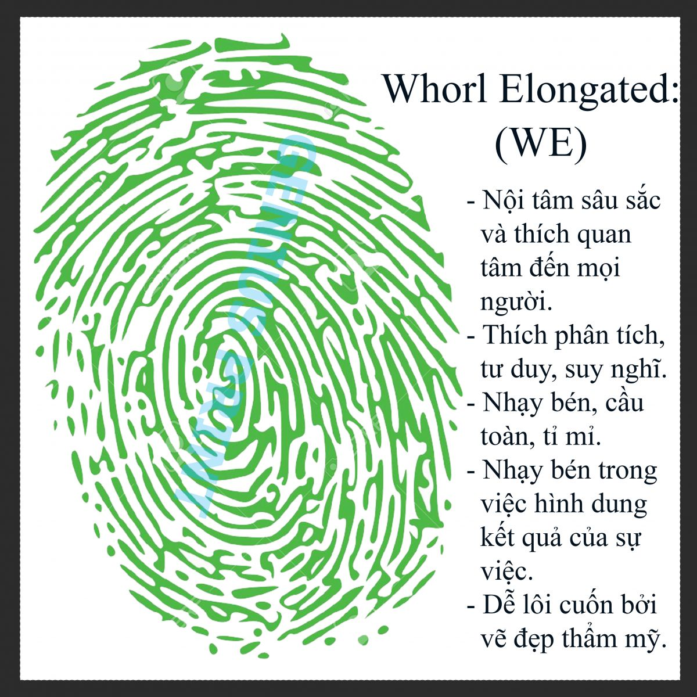
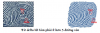
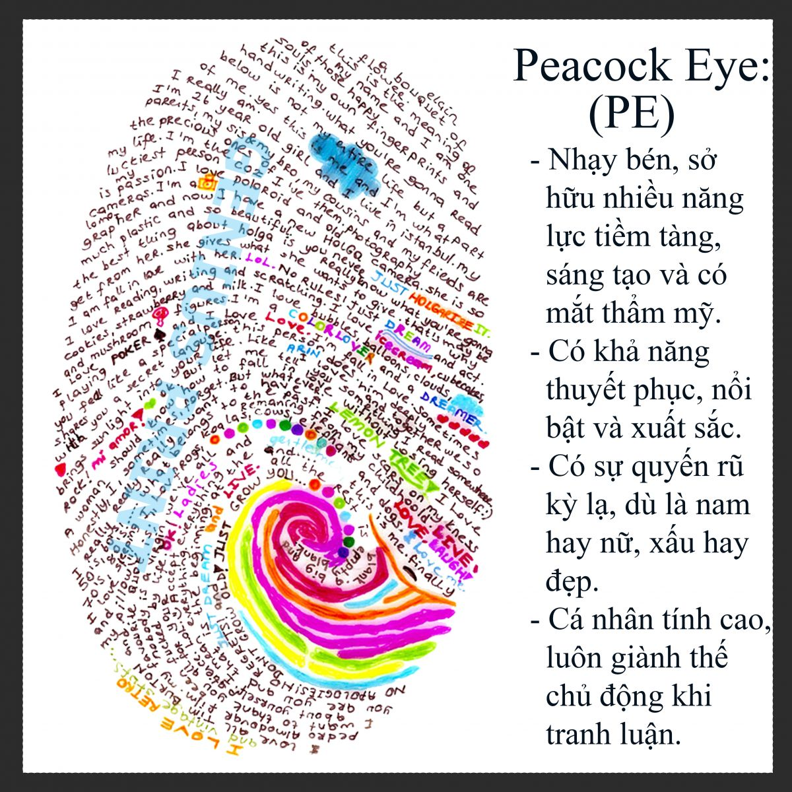

Hè này đi thực tập giữa khóa trúng ngay 1 công ty làm sinh trắc học vân tay, thực tập phòng nhân sự thôi, nhưng cũng học lỏm đc vài thứ, muốn có người bàn luận nên chia sẻ trên đây. Vì cái trò này đa số cần phân tích qua máy, nên những đưa ngoại đạo như chúng ta chỉ tìm hiểu đc 1 ít thôi:: </> Cơ sở của sinh trắc học vân tay: Sinh học & Thống kê - Lúc chúng ta trong bụng mẹ, thì vân tay hình thành cùng lúc với cấu trúc não => các nhà khoa học nói rằng, có sự lan quyên ở đây. Cùng với đó là vân tay không thay đổi đến hết đời, và không có ai trùng vân tay trên đời. - Và phương thức để tìm ra sự lan quyên này là làm thống kê => Phân ra các chủng vân tay chính và đặc điểm của những chủng đó. Tất nhiên là sẽ có sai số, nhất là với tính cách và não bộ con người cực kỳ phức tạp dưới góc nhìn vi mô. Và cái này phân tích hướng đến bẩm sinh, mà con người còn có môi trường tác động, và sự tự cố gắng. Bài phân tích nói rằng nếu phát triển đúng với khả năng sinh học bẩm sinh thì sẽ là tốt nhất, mình thì không chắc, giữa một cái có 1 cái có khả năng (trường hợp nó đúng là khả năng của mình) và 1 cái được môi trường ủng hộ thì nên chọn cái nào? Nếu làm chủ được môi trường thì tốt quá. Nói lảm nhảm đến đây đủ rồi, ý mình muốn nói là theo mình cái này có giá trị tầm 60% ( vừa đủ hơn 50% để nó có thể phát triển như ngày nay, vừa không quá cao để có thể dự đoán đc con người mình - cơ bản mình không thích cái gì mà mình không tự chủ đc :v). Bắt đầu vô chủ đề chính: </> Các chủng vân tay: ##Có 3 chủng vân tay chính: Loop (vân móc), Whorl (vân xoáy tròn - ông bà ta hay gọi là hoa tay), Arch (vân núi, vân đồi gì đó) ##Cách để xác định chủng vân tay: 1, Core : gọi nôm na là cái lỗ ở giữa 2, Delta: nôm na là hình tam giác ở 2 mé dưới của vân tay => + Vân móc (Loop): 1 delta, 1 core: hình ảnh đại diện: dòng nước, hay chim bồ câu + Vân xoáy tròn (Whorl): 2 delta, >=1core: hình ảnh đại diện: sư tử, hay chim đại bàng + Vân đồi/núi/sóng (Arch): 0 delta, 0 core: hình ảnh đại diện: núi, hay con ong chăm chỉ ##Đặc điểm các chủng và phân loại chi tiết: ((+)) Loop: Uyển chuyển như nước. - Yêu hòa bình, tình cảm. - Thích hòa nhập vào cộng đồng, thân thiện, cởi mở, cả tin. - Linh hoạt và thích nghi nhanh. - Quyết đoán không cao, dễ bị ảnh hưởng. Trong Loop có 3 loai: Ulnar Loop (UL); Radial Loop) (RL); Sharp Loop (SL); a, UL - nước xuôi: Có đuôi hướng về ngón út - chiếm đa số ( gần 60%) Nói chung nó là đại diện cho chủng Loop luôn đó. b, RL - nước ngược - có đuôi hướng về ngón cái - chủng hiếm và mạnh (dưới 5%) Nói chung nó thông minh, sáng tạo, thích khác biệt và nổi loạn, như dòng nước chảy ngược. Lưu ý, nó vẫn là Loop nên chủng tuy hơi lập dị nhưng vẫn hiền khô. c, SL - Nước ngang - đường vân đứng gần giống như AT (chủng Arch) Cá tính và khá ngang bướng. Lưu ý: tính cách còn phụ thuộc vào cấu trúc não bộ, nếu có 10 UL mạnh mà chỉ số Thùy trước trán cao thì khá cá tính và khó thuyết phục. (Học lỏm thì chả biết chỉ só thùy trước trán nó như thế nào đâu ) ((+)) Whorl - Mạnh mẽ như sư tử - Tinh thần chiến đấu cao. - Định hướng mục tiêu, theo đuổi thử thách. - Thích người khác lắng nghe, có chính kiến. - Chủ động - La biểu tượng của sự tự nhận thức, ý chí. Trong W, có 8 loại W chính: a, WT và WS: Sư tử đầu đàn. Dạng vân có hình tròn đồng tâm (WT – Whorl Target) hoặc xoắn ốc (WS – Whorl Spiral) - Sống bằng lý trí, nóng nảy. - Tự kỷ, khó chia sẻ, kiên trì. - Hành động nhanh chóng và chính xác, không kiên nhẫn khi thấy người khác lề mề, chậm chạp. - Chủ quan, ếu chịu nghe ai, ích kỷ, độc đoán. - Ý chí mạnh mẽ, tự động viên. - Không gì là không thể, đòi hỏi rất cao ở bản thân. - Dễ làm tổn thương người khác vì luôn hành động theo mục tiêu của họ, nhưng thích Win-win, thực dụng và thực tế. - Hỏi nhiều, nhưng không như RL - hỏi cho biết, bọn này hỏi đến cùng cho đến khi nhận đc câu trả lời thỏa đáng thì thôi. - WT nổi bật nhất là tính tự kỷ, WS nồi bật nhất là tính kiên trì. WS hướng ngoại nhiều hơn WT, có thể thổ lộ tâm sự. - Bọn này thích làm lãnh đạo, quản lý - và cũng có tố chất làm quản lý, lãnh đạo. WT - WS b, WE: Lửa và khí Gần giống như WT, WS nhưng không phải dạng tròn mà dạng bầu dục. - Làm việc rất hết mình, nóng tính. - Có khả năng truyền lửa. - Bị cảm xúc chi phối, nhạy cảm và dễ đồng cảm. - Lương thiện, bị ám ảnh bởi tình cảm trong quá khứ. - Rất sợ thất bại => khó thể hiện hết khả năng, nhưng bù lại trước khi làm việc gì đều đắn đo, phân tích, dự đoán. Có khả năng lập kế hoạch, tầm nhìn xa, dự đoán kết quả. - Kiên trì không cao.  c, WC - WD - WI (Sở khanh - sở khanh - người của gia đình) - Linh hoạt, đặt đâu cũng sống đc. - Đa mục tiêu, đa kế hoạch, làm nhiều việc cùng lúc. (WC không lập kế hoạch, có năng khiếu nước đến chân mới nhảy). - Có khả năng nhìn thấy cả 2 mặt của một vấn đề, dễ bị dày vò vì điều này. - Tình cảm, thích tự do, thử thách, thích khám phá, dễ thay đổi. - Ôm đồm, muốn đc khen ngợi. - Giao tiếp, thương lượng tốt. Kiên cường. - Nhiều tài lẻ, cuốn hút, nên đc nhiều người thích và cũng thích rất nhiều người => sở khanh. Trừ Wi là người có tinh thần trách nhiệm gia đình rất cao. d, WP - WL (Hay gọi chung là PE - Peacock Eye - Mắt công mắt quạ, lộn mắt công mắt phượng) - Là chủng hiếm và mạnh (dưới 1%)  - Biểu tượng cho sự hoàn hảo. - Rất sexy (không liên quan đến đẹp xấu), mà ở đây là sự hấp dẫn, quyến rũ kỳ lạ. Không thể ghét được 1 PE. - Khả năng dẫn dắt và sáng tạo. Cùng lá sáng tạo, khác biệt, nhưng khác với RL-Hướng tới sự khác biệt và nổi loạn, PE hướng tới sự hoàn hảo. - Thông minh, khó tính, tích cực, lạc quan, may mắn. - Xuất sắc trong giao tiếp và thuyết phục. - Là người có năng lượng rất trong sạch. - Đặc biệt thu hút WE - Khi 1 người cầu toàn gặp 1 người hoàn hảo.  Hết đính kèm file đc nữa rồi, thôi tạm dừng :v Tiếp theo sẽ là ((+)) Chủng Arch (1 chủng hiếm và mạnh - dưới 5%). </> Liên hệ giữa từng ngón tay tới các phần của não. </> ATD và TFRC
((+)) Chủng Arch - chủng thiên tài - hiếm và mạnh (dưới 5%) - Tính cách của Arch được ví như là Núi. Bền vững như Núi + Là chủng thiên tài, với khả năng học tập vô hạn, hấp thu không ngừng. + Trước khi được kích hoạt thì rất "ngu", nhưng sau khi đc kích hoạt thì học tập không ngừng và tiếp thu không ngừng. + Chậm chắc từng bước một, thích làm theo lối mòn, không thích thay đổi + Tinh thần trách nhiệm cao, thích an toàn, đơn giản, không tham vọng, không thực dụng. + Quyết tâm và kiên trì cao, ý thức mạnh mẽ về công lý. + Không thích tư duy trừu tượng và mơ hồ. Nghi ngờ và hoài nghi về bất cứ điều gì mới. - Có 2 loại A chính lá AS (đồi) và AT (núi) So sánh: - SA theo chủ nghĩa an toàn, rất siêng năng, có thể làm những công việc lặp đi lặp lại hàng ngày. - SA Luôn tuân thủ vào các quy tắc và các quy định, rất cẩn thận. Tính cách vụng về, không nhanh nhẹn, chậm mà chắc. - TA là một chủng thông minh. - TA cũng chăm chỉ, nghiêm túc, tuân thủ quy tắc, đam mê công việc. - TA cẩn thận và chi tiết. - TA khó tin tưởng vững chắc nếu không có bằng chứng cụ thể, khá bảo thủ - TA e thẹn, nhút nhát trong môi trường mới, nhưng lại bốc đồng, dễ bị tác động, lập trường không vững chắc, dễ từ bỏ công việc. - Cả hai đều không có khả năng ứng biến trong tinh huống khẩn cấp, phải dựa vào kinh nghiệm trước đó. </> Liên hệ giữa các ngón tay với cấu tạo não ##Các thùy của não ##Liên hệ giữa ngón tay và thùy não: (Tay phải là não trái và ngược lại) Chủng vân tay ở 2 ngón cái thể hiện rõ tính cách của người đó nhất. </> ATD và TFRC - mệt quá rồi, ai có hứng thú thì lên mạng search nhá
https://trinhtuvan.files.wordpress.com/2015/08/test-van-tay.pdf Có file này viết dễ hiểu hơn cái đống ở trên nhiều nè Phân tích trường hợp của mình: L1 (ngón cái tay trái): WS - R1: WT L2 (ngón trỏ tay trái): PE - R2: PE L3 (ngón giữa tay trái): UL - R3: UL L4 (ngón nhẫn tay trái): WE - R4: UL L5 (ngón út tay trái): UL - R5: UL => 5 W và 5 UL, khá cân bằng, hay khá mâu thuẫn. Vừa muốn hòa nhập cộng đồng, nhưng khó chia sẻ - 2 ngón cái. Có PE mà mình không thấy có khả năng thuyết phục mẹ gì nói năng như thằng điên, nếu phải lý giải có thể giải thích là vì WS và WT áp chế làm mình khó chia sẻ, và 5UL làm mình không muốn tranh luận, nên PE nó bị áp chế :v Với lại PE mình rơi vào ngón tưởng tượng, xâu chuỗi => ok nghe cũng lọt tai đấy ) WE ngay ngón cảm thụ âm thanh => đồng cảm qua âm thanh, và cũng lo sợ nhiều thứ, nhưng WT và WS của mình nó quyết định bất chấp và chấp nhận thử thách. Nghĩa là mình không tự tin như vẻ bề ngoài. 2 ngón cái là WT và WS luôn => đáng ra mình phải rất kiên định và kiên trì chứ, trong khi mình nhảy như ngựa Nếu lý giải có thể vì WE và 5 UL, làm mình không thẳng lắm, mà hay bay nhảy, nhưng những mục tiêu của đời mình thì dù có thịnh có suy nhưng mình chưa bỏ bất kỳ cái nào, cái xa nhất là từ lớp 4 rồi.
L1: UL; R1: WE L2: WE; R2: WE L3: WE; R3: UL L4: WE; R4: UL L5: UL; R5: UL Toàn WE với UL, 6-4. Đến 100% tình cảm và quan tâm đến mọi người Nhưng khá đúng ^^ cả với những đặc điểm khác á ~
How can you live with this? :v Nếu thật là như thế này thì bạn là người không dám làm gì luôn á :v Cái này khoa học cần nghiên cứu thêm :3
L1: WS; R1: WS L2: WE; R2: WE L3: WS; R3: UL L4: WS; R4: WE L5: WE; R5: WS Chả biết nó có liên quan tới MBTI không?
Không muốn làm mọi người cụt hứng nhưng đã có nghiên cứu khoa học nào cho thấy sự liên quan giữa dấu vân tay và tính cách chưa?
^ Chưa, ngay cả dữ liệu thống kê cũng không được công khai. Rất nhiều điểm đáng nghi. Và dù cho là đáng tin đi nữa thì bẩm sinh cũng chỉ chiếm % rất nhỏ con người hiện tại